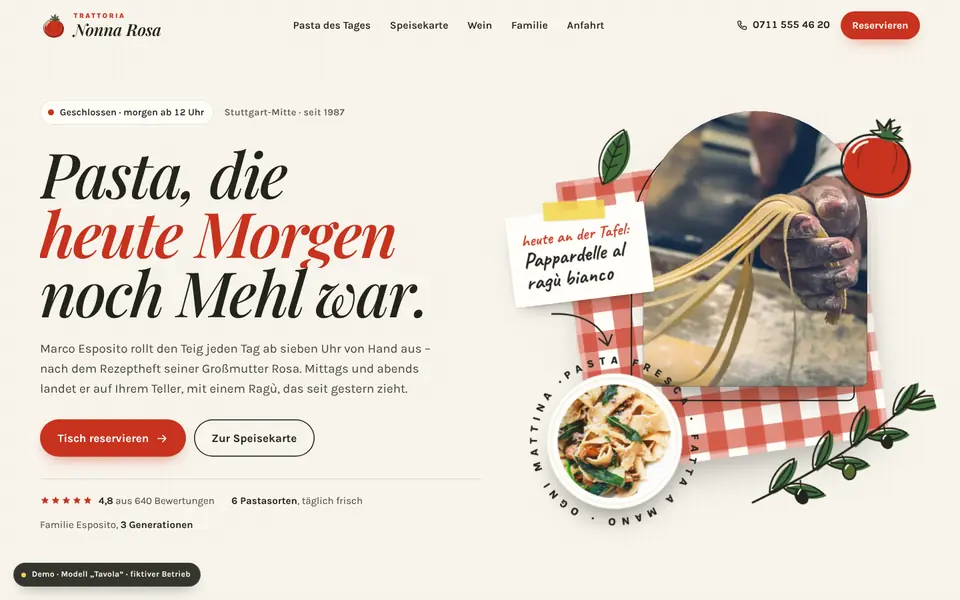
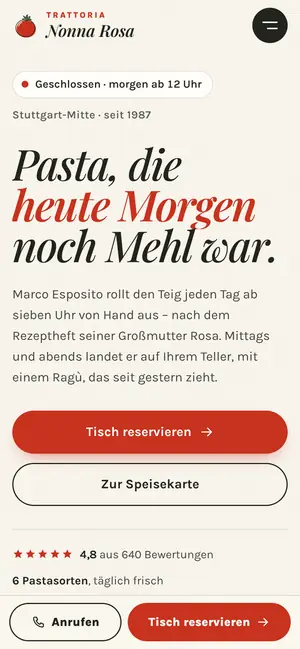

Case Study 09 / 30 · Gastronomie & Hotel
Trattoria Nonna Rosa
Modell „Tavola“
Familien-Trattoria mit Kreidetafel, gefilterter Speisekarte, Wein-Pairing-Radar und Tischreservierung.


Ausgangslage
Nonna Rosa ist eine erfundene Familien-Trattoria in Stuttgart-Mitte. Gäste wollen wissen, ob gerade geöffnet ist, was heute auf der Tafel steht, was sie bei Allergien essen können und ob am Samstag noch ein Tisch frei ist. Die Seite soll das alles beantworten und dabei nach Küche und Familie aussehen, nicht nach Kette.
Idee
Tomate, Olive, Zitrone, Leinen und Basilikum; Playfair Display für die Überschriften, Karla als Text, Caveat als Handschrift auf Zetteln und Tafel. Gezeichnete Illustrationen, eine Kreidetafel, Polaroids an der Wäscheleine und Gästestimmen in Bon-Optik machen die Seite handgemacht. Bewegung ist spielerisch: Die Tafel wird beschrieben, die Polaroids pendeln, wenn du scrollst.
Was die Seite kann
- KreidetafelDie Pasta des Tages wird Zeile für Zeile per stroke-dashoffset geschrieben, mit Kreidestaub auf Canvas; der Wochenplan ist wählbar, der heutige Tag vorausgewählt.
- SpeisekarteTabs mit Tastatursteuerung, Filter Vegetarisch/Vegan und ohne Gluten, Ei, Milch, Nüsse oder Fisch mit Zählern je Tab, Weinkarte als Tabelle.
- Wein-PairingDu wählst ein Gericht, ein Radar mit sechs Achsen morpht zum Profil des passenden Weins, die Werte stehen zusätzlich als Liste und aria-live-Text bereit.
- WäscheleineDie Familiengeschichte von 1958 bis heute als gepinnte horizontale Strecke, die Polaroids pendeln mit der Scrollgeschwindigkeit; unter 900 px als vertikale Liste.
- TischreservierungKalender mit Pfeiltasten und Montag als Ruhetag, Zeitfenster mit ausgebuchten Zeiten, Personen-Stepper, Anlass, Tischkarte mit Live-Zusammenfassung und Bestätigung mit .ics.
- Live-Öffnungsstatus im Header, „heute“-Markierung bei den Öffnungszeiten und ein Foto, das im Angebotsbereich dem Mauszeiger folgt.
Dein Betrieb
So eine Seite für dich?
Schreib mir kurz, was du anbietest und was deine Website leisten soll. Du bekommst eine ehrliche Einschätzung, was sie kostet und was sie dir bringen kann.
Projekt anfragen